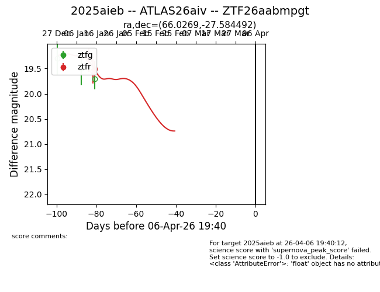
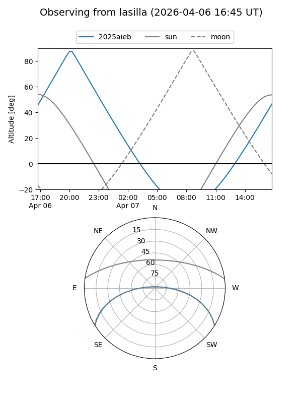
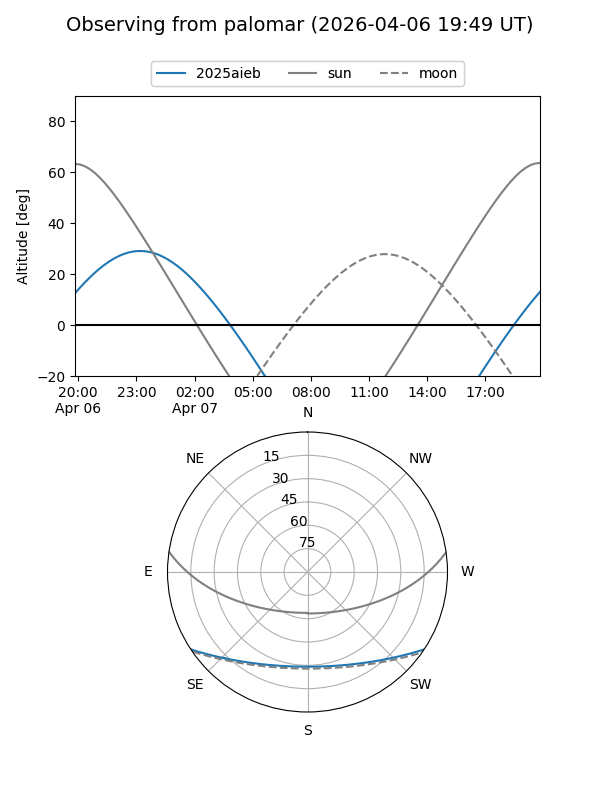
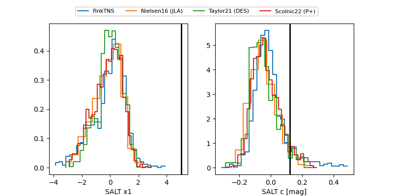

2025aieb
Target 2025aieb at 2026-01-23 07:06
Aliases and brokers:
FINK: link
Lasair: link
ALeRCE: link
TNS: link
YSE: link
alt names
ZTF26aabmpgt (ztf,fink_ztf)
2025aieb (tns,yse)
ATLAS26aiv (atlas)
Coordinates:
equatorial (ra, dec) = 66.0269,-27.58449
equatorial (HMS+DMS) = 04:24:06.47,-27:35:04.17
galactic (l, b) = (226.3953,-43.15920)
Flags:
Photometry:
last ztfr=19.51
1 ztfr detections
Lightcurve

Visibility


Additional plots
